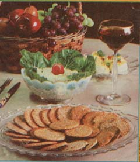

Are you tired of snacking on plastic-wrapped nutritional disasters? Do you grow weary of paying outrageous prices for potato chips and pretzels? My family used to beg me to bring home salty snacks, but I felt guilty about buying them - and with good reason. Most store-bought munchies are "empty foods" nutritionally - all are expensive - and even the best ones (Wheat Thins and Rye Krisps, for example) are worth much less than you pay for them.
So I experimented and came up with a cracker that's inexpensive, nutritious and easy to make. And my family loves it! Here's the basic recipe:
2 cups of whole wheat flour
1 teaspoon of salt
1/2 cup of sesame seeds
1/4 cup of raw wheat germ
1/4 cup of vegetable oil
1/2 cup of cold water water
Blend together the flour, salt, sesame seeds and wheat germ, then add the oil and mix well with a fork. Pour in the cold water, mix, and continue to add water a tablespoon at a time until the dough is soft and workable. (Flours vary in their ability to absorb moisture, so I can't tell you exactly how much water to use.) Finally, turn the dough out onto a floured board and knead it for at least ten minutes. (The longer, the better.) Set the dough aside.
Now pull off a golf-ball-sized lump of paste and roll it into a ball. Then (using a floured rolling pin) roll the dough out until it's cardboard thin, as thin as it'll get without tearing. You should now have a cracker that's about 5 inches in diameter. (Or do as our staff recipe tester did and shape smaller, easier-to-handle crackers with a cookie cutter.-Mother.) Repeat this procedure untill you've used all the remaining dough.
Next, heat an ungreased cast-iron skillet as hot as you can get it. (If you cook on a wood stove, you don't need a skillet, just use the top of the stove.) Bake each cracker in the skillet (or on the stove top) until it's light-brown on the bottom, then flip it over and just barely brown the other side. (Again, our staff tester
tested another method with good results: Bake the Crackers on an ungreased cookie sheet in a 400-degrees-Fahrenheit oven, turning as described above to brown both sides. - Mother.) Allow the crackers to cool thoroughly on a rack before storing them in an airtight container,
You can vary this "basic cracker recipe" in dozens of ways. Instead of using two cups of whole wheat flour, for instance, you can use one cup of finely ground corn, rye, oats, buckwheat or rice, and one cup of whole wheat flour. Alternatively, you can replace the sesame se eds with one-half cup of sunflower seeds, poppy seeds, soy grits, shredded coconut, chopped or ground nuts - you name it.
Or you can make your snackin' crackers real gems of nutrition by substituting a quarter cup of non-ins tant dry milk or soy powder for the quarter cup of eat germ.
Then too, you can give your crackers added zest and tanginess with herbs. It's possible to make "herb crackers" once a week for a year without repeating a flavor if you use a little imagination. Try adding a teaspoon of dried (or a tablespoon of fresh) thyme, sage, rosemary, oregano, parsley, marjoram, chives, dill, savory or basil to the basic cracker recipe. Or chop a of garlic and toss that in. Or throw in a tablespoon of whole caraway seeds. (Caraway seems to go especially with corn.)
And if you really want to put nutrition into your family's snacks, why not make a cheese spread to go with your crackers? As you probably know, most whole grains are low in the essential amino acids isoleucine and lysine. Dairy products, on the other hand, are rich in these two amino acids - which means that by serving whole grain crackers with cheese you can provide your family with more usable protein than is available in either the crackers or cheese separately. (For a fuller discussion of this subject, see Frances Moore Lappe's book Diet for a Small Planet. )
Here's the recipe I use to make cheese spread:
Mix together:
8 ounces of cream cheese or cottage cheese
2 tablespoons of onion, chopped very fine (or grated)
2 tablespoons of dill pickle, chopped fine
6 anchovies, chopped (or 1 tablespoon of anchovy paste) or 12 green olives, chopped
1/2 teaspoon of Worcestershire sauce
1/4 teaspoon of black pepper
The above recipe lends itself well to modification, so let your imagination go! Add chopped raw vegetables (green peppers, celery, cauliflower, carrot or what-have-you) or season the cheese with any of the herbs you use to make "herb crackers" (again, use one teaspoon of dried herbs or a tablespoon of fresh). Pep up the spread with a few drops of Tabasco or a chopped hot pepper. Throw in whatever vegetable bits, spices, etc. you have on hand. Experiment!
|
 MOTHER EARTH NEWS STAFF Tired of snacking on over-priced nutritional disasters? Make your own lip-smackin' snackin' crackers (and cheese spread), and enjoy good nutrition at snack time for a change. You'll be glad you did! |
|
|